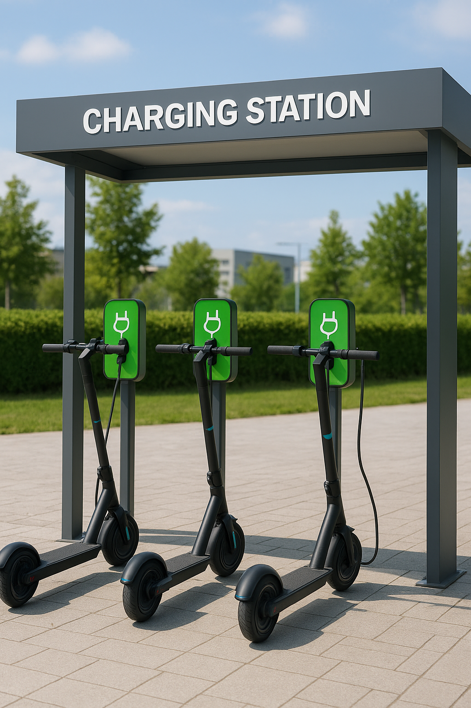

Nearby Stations

8 Available
Gare de Nantes Station
4.8
27 Boulevard de Stalingrad, 44000 Nantes
5 min walk
€2/hour
85% Solar
Navigate
Details
2 Available
Château Station
4.6
4 Place Marc Elder, 44000 Nantes
12 min walk
€2.5/hour
72% Solar
Navigate
Details
12 Available
Machines de l'île Station
4.9
Parc des Chantiers, Boulevard Léon Bureau, 44200 Nantes
8 min walk
€1.8/hour
90% Solar
Navigate
Details